ComponentIntro-组件介绍¶
1. imgfilter组件¶
<div>
<ui-imgfilter>{"img":"./btnr.png", "path":{{_path}}, "arr":[["hsl", 150, 2]]}</ui-imgfilter>
</div>
效果展示：
原图：
效果图：
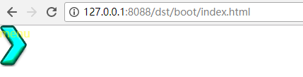对图片进行滤镜处理
参数说明：
- img 原始图片路径
- path 路径，设置为空或者_path都表示当前路径，也可以设置为其他路径
- arr 数组对象，表示对图片进行的一系列处理，包括 灰度-色相饱和度亮度-亮度对比度-腐蚀-锐化-高斯模糊，arr”:[[“gray”], [“hsl”, 180?, 1?, 1?], [“brightnessContrast”, 0.5, 0?], [“corrode”, 3?], [“sharp”, 3?], [“gaussBlur”, 3?]]}
- 如果arr不存在或长度为0, 表示使用标准图像
2. imgtext组件¶
<div>
<ui-imgtext>{"textCfg":{
"width":50,
"hfactor":1.1,
"zoomfactor":2,
"text":"神兵",
"font":"normal 400 16px kaiti_bold",
"color":{"x1":0,"y1":"45%","x2":0,"y2":"55%","steps":[0,"rgb(206,175,233)",1,"rgb(159,97,212)"] },
"strokeWidth":2,
"strokeColor":"rgb(0,0,0)",
"lineHeight":6
}}
</ui-imgtext>
</div>
效果展示：
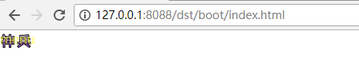- 将文本处理成图片
- 只支持单行文字，不支持继承的font属性，不支持line-height属性
- 如果支持继承的font属性，则需要在div放入节点后，获取font属性
- 如果支持多行文本，需要支持line-height属性，并处理对齐问题
- 参数示例
{
textCfg:canvas.ImgTextCfg,
space?:number, //作用不明
"show":"" // 如果有show，表示为拼接文字，text为全文字，show变动不会生成新的文字图片
}
canvas.ImgTextCfg {
"text": "测试",
"font": "normal 400 24px 宋体",
"color": "#636363" | GradientCfg, // 颜色 或渐变颜色
"shadow": { // 阴影
"offsetX": number,
"offsetY": number, //偏移量
"blur": number, // 模糊值，一般为5
"color": string; // 颜色 "rgba(0,0,0,0.5)" "gray" "#BABABA"
};
"strokeWidth": number, // 描边宽度
"strokeColor": string | GradientCfg, // 描边颜色
"background": string | GradientCfg, // 背景
}
3. countdown组件¶
<ui-countdown>{"cd_time":{{100000}},"cd_interval":1000}</ui-countdown>
效果展示：
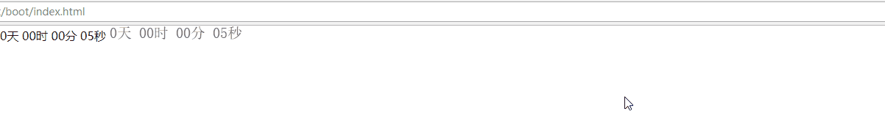参数说明：
- 必须有cd_time属性，表示倒计时的时间点，可以是时间点的毫秒数，也可以是代表时间点的字符串（yyyy-MM-dd HH:mm:ss）毫秒。
- 可以有now_time属性(使用时间不是本地时间,请传)，表示现在时间，可以是时间点的毫秒数，也可以是代表时间点的字符串（yyyy-MM-dd HH:mm:ss）毫秒
- 可以有cd_interval属性，表示倒计时的计时频率，单位毫秒，默认1000。
- 可以有cd_not_zerofill，表示是否不补零,默认补零.
存在问题
- 此组件使用imgtext画出倒计时文字，每次刷新有闪一下的感觉
- 参数cd_time，可以是表示时间段的毫秒数，也可以是表示时间点的字符串（yyyy-MM-dd HH:mm:ss），传递时间点有bug，全部转换为毫秒进行倒计时了。
4. selectnumber组件¶
<ui-selectnumber>{"count":1, "maxCount":50, "interval":200, "minCount": 0}</ui-selectnumber>
效果展示：
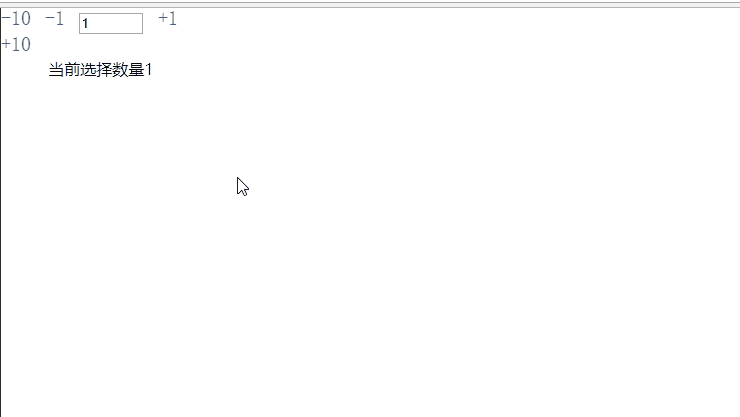参数说明：
- 可以有count初始值, 默认为1
- 可以有maxCount最大值, 默认为Number.MAX_SAFE_INTEGER
- 可以有minCount最小值, 默认为0
- 可以有interval自动变化的时延, 默认为200毫秒
父组件可以通过ev-selectcount事件来监听数据变化
长按可以自动变化，自动增加或减少对应数值
5. checkbox组件¶
标准选择框
调用实例
<components-checkbox-checkbox>{type:"true",text:"选中"}</components-checkbox-checkbox>
通过类型控制选择框初始状态
- 选中状态(true)
- 未选中状态(false)
- 禁用状态(disabled)
- 半选择状态(indeterminate)–通常仅在选择框组中使用
事件
在点击选择框时，会向外部抛出事件(ev-checkbox-click)，外部接收即可，参数如下
- 以前的状态(oldType)
- 新的状态(newType)
- 位置(index)–仅在选择框组中有值
选择框组
调用实例
<components-checkbox-checkboxGroup>{chooseAll:"全选",list:[...],min:2,max:4}</components-checkbox-checkboxGroup>
参数介绍
- 是否显示全选(chooseAll)
- 选择框组数据(list)–每一条数据都是一个标准的选择框
- 最小数量限制(min)
- 最大数量限制(max)
功能
- 可通过全选控制全选或全不选
- 可通过设置min与max控制选择数量
事件
在点击全选框时，会向外部抛出事件(ev-checkbox-all-click)，外部接收即可，参数如下
- 以前的状态(oldType)
- 新的状态(newType)
注意事项
- 选择框由于样式的限制，需外部引入css(components.css)进行处理
- 选择框组中，选择所有与数理控制原则上不共存，因为其表现形式有差异
效果展示：
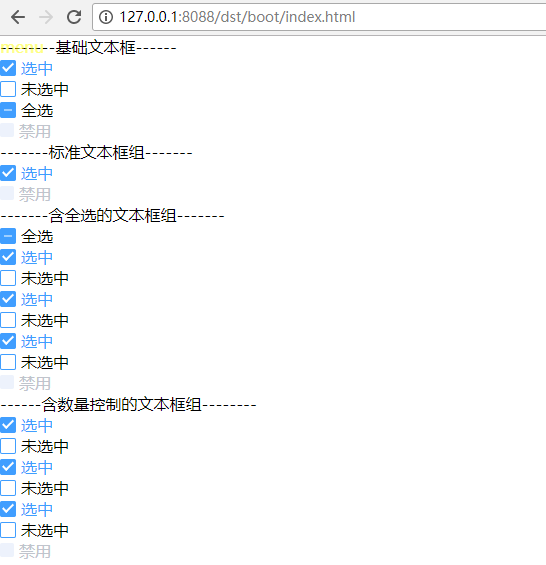6. collapse组件¶
- props
interface CollapseItem{
title:string;//标题
htmlStr:string;//内容
}
interface Props{
htmlStrList:Array<CollapseItem>;//html标签string
accordion?:boolean;//是否以手风琴模式显示
}
htmlStrList:[
{
title:"一致性 Consistency",
htmlStr:``<div>与现实生活一致：与现实生活的流程、逻辑保持一致，遵循用户习惯的语言和概念；</div>
<div>在界面中一致：所有的元素和结构需保持一致，比如：设计样式、图标和文本、元素的位置等。</div>``,
},
{
title:"反馈 Feedback",
htmlStr:``<div>控制反馈：通过界面样式和交互动效让用户可以清晰的感知自己的操作；</div>
<div>页面反馈：操作后，通过页面元素的变化清晰地展现当前状态。</div>``,
},
{
title:"效率 Efficiency",
htmlStr:``<div>简化流程：设计简洁直观的操作流程；</div>
<div>清晰明确：语言表达清晰且表意明确，让用户快速理解进而作出决策；</div>
<div>帮助用户识别：界面简单直白，让用户快速识别而非回忆，减少用户记忆负担。</div>``,
},
{
title:"可控 Controllability",
htmlStr:
``<div>用户决策：根据场景可给予用户操作建议或安全提示，但不能代替用户进行决策；</div>
<div>结果可控：用户可以自由的进行操作，包括撤销、回退和终止当前操作等。</div>``
}
]
- 基础用法
<components-collapse-collapse>{htmlStrList:{{it1.htmlStrList}}}</components-collapse-collapse>
- 手风琴效果
<components-collapse-collapse>{htmlStrList:{{it1.htmlStrList}},accordion:true}</components-collapse-collapse>
效果展示：
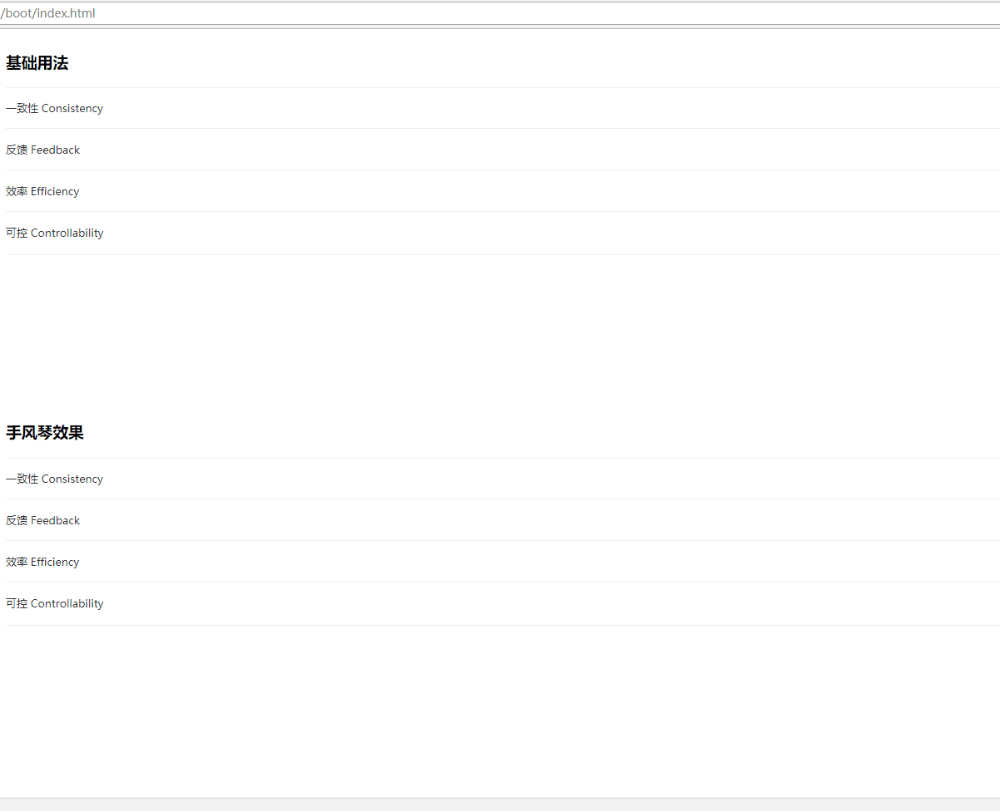- 事件
- ev-collapse-change 点击时触发,如果是手风琴模式，参数 activeIndexs 类型为string，否则为array
7. input组件¶
- props
interface Props{
input:string;//初始内容
placeHolder:string;//提示文字
disabled:boolean;//是否禁用
clearable:boolean;//是否可清空 只对type="text"有效
type:string;//text textarea
rows:number;//输入框行数，只对 type="textarea" 有效
prepend:string;//前置内容
append:string;//后置内容
style:Object;//样式
}
- 基础用法
<components-input-input></components-input-input>
<components-input-input>{input:"这是初始内容"}</components-input-input>
<components-input-input>{placeHolder:"这是提示内容"}</components-input-input>
<components-input-input>{input:"这是初始内容",placeHolder:"这是提示内容"}</components-input-input>
- 禁用示例
<components-input-input>{disabled:true}</components-input-input>
- 可清空
- 目前点击后无法清空,待修复
<components-input-input>{clearable:true}</components-input-input>
- 文本域
<components-input-input>{type:"textarea"}</components-input-input>
- 可自适应文本高度的文本域
- 复合型输入框
<components-input-input>{prepend:"http://"}</components-input-input>
效果展示：
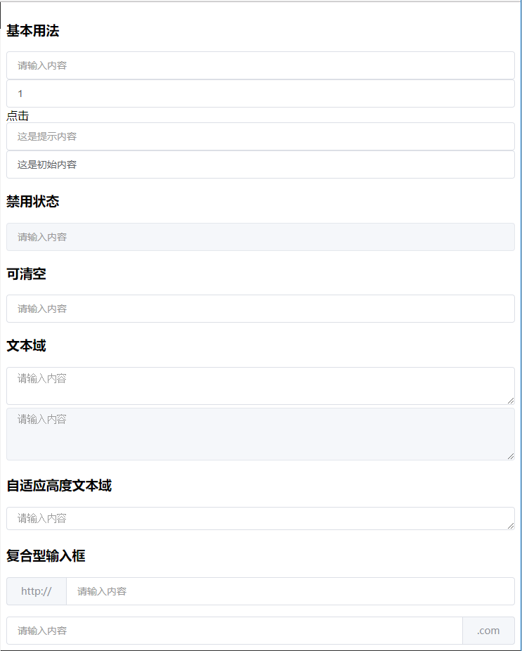事件
- ev-input-change 在输入框值改变时触发,回调参数 value 【英文和中文抛出事件次数有差异】
- ev-input-blur 输入框失去焦点
- ev-input-focus 输入框获得焦点
- ev-input-clear 点击清空按钮
8. input_autocomplete组件¶
- props
interface TipList{
value:string;//匹配文字
}
interface Props {
tipList:Array<TipList>;//提示列表
}
- 基础用法
<components-input_autocomplete-input_autocomplete>{tipList:[{ "value": "三全鲜食（北新泾店）}]}</components-input_autocomplete-input_autocomplete>
效果展示：
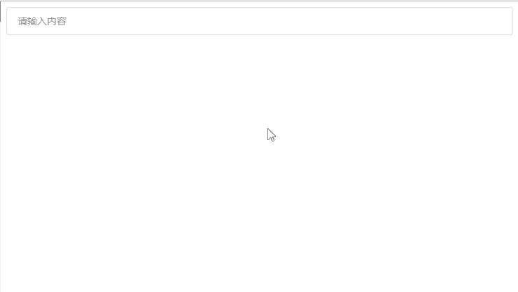事件
- ev-input-change 在输入框值改变时触发,回调参数 value 【英文和中文抛出事件次数有差异】
- ev-input-blur 输入框失去焦点
- ev-input-focus 输入框获得焦点
- ev-input-select 点击下拉选中后触发
9. loading组件¶
- props
interface Props {
text:string;//加载文本
}
全局loading
- 全局loading需要通过popNew()来实例化loading组件
- 并在合适的时候调用close的callback来关闭loading组件
let close = popNew("components-loading-loading",{});
setTimeout(()=>{
close.callback(close.widget);
},3000);
效果展示：
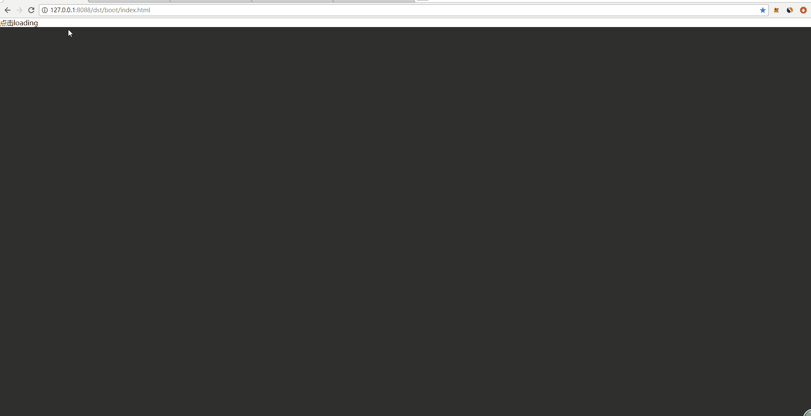局部loading
- 局部loading需要动态设置组件是否显示
- 父节点positon不能为static
<div on-click="localClick" style="height:500px;width:500px;margin:200px auto;background-color:#fff;position:relative;">
局部loading
{{if it1.showLocalLoading}}
<components-loading-loading>{text:"局部加载"}</components-loading-loading>
{{end}}
</div>
效果展示：
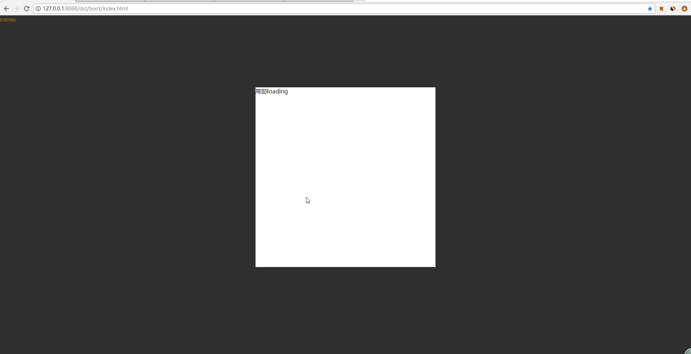10. message组件¶
- 提示框
- 调用实例
//ts代码中直接打开消息窗口即可，3秒后消失，显示在界面最上部 popNew("components-message-message", { type: "success", content: "成功提示的文案", center: true })- 效果展示：
参数介绍
类型(type)
- 成功(outer)–颜色#67c23a
- 警告(warn)–颜色#e6a23c
- 提示(notice)–颜色#909399
- 错误(error)–颜色#f56c6c
文本内容(content)
是否居中显示(center)–默认为(false)
显示在pop_tip层，不接受任何事件
确认提示框
- 调用实例
//ts代码中直接打开窗口即可，手动关闭 popNew("components-message-messagebox", { type: "confirm", title: "确认消息弹框", content: "错误提示的文案" }, ok?, cancel?)- 效果展示：
参数介绍
类型(type)
- 确认框(alert)
- 确认取消框(confirm)
- 确认取消输入框(prompt)
标题(title)
文本内容(content)
确认回调(ok)–可选
- confirm类型下，回调参数为输入数据
取消回调(cancel)–可选
显示在top层，遮挡全屏，全屏接受点击事件
通知
- 调用实例
//ts代码中直接打开窗口即可，可控制手动关闭或3秒后自动关闭 popNew("components-message-notification", { title: "提示", content: "手动关闭提交内容弹框", manuallyClose: true })- 效果展示：
参数介绍
- 标题(title)
- 文本内容(content)
- 手动关闭(manuallyClose)–默认为false
显示在download层，外部不接受事件，内部接受事件
12. progress组件¶
基础功能
- 调用实例
<components-progress-progress>{type:"out",value:0,color:"#8e71c7",status:"exception"}</components-progress-progress>
效果展示：
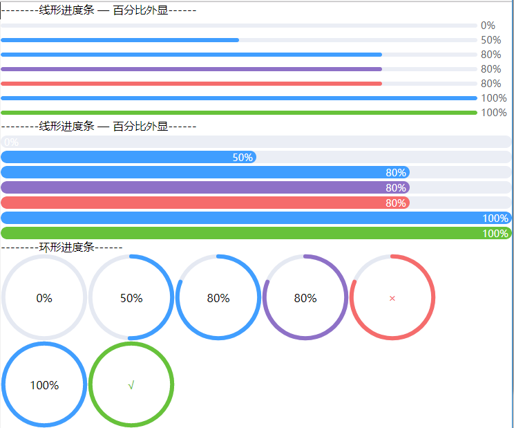参数介绍
类型(type)
- 线形进度条 — 百分比外显(outer)
- 线形进度条 — 百分比内显(inner)
- 环形进度条(circle)
进度值(value)–0~1的小数
进度条颜色(color)–默认为(#409eff)
状态(status)
- 不填–标准显示
- 完成(success)—进度条颜色将变为(#67c23a)
- 异常(exception)—进度条颜色将变为(#f56c6c)
遇见的问题
- svg的显示，有单独的组件ui-html进行支持
13. radio组件¶
Radio 单选框
- 需要配合RadioGroup使用,不要单独使用
- 使用方法
<components-radio-radio>{labelIndex:0,text:"测试文本1",checkedIndex:0}</components-radio-radio>
- props属性
interface Props { labelIndex: number;//当前单选框下标 text:string;//Radio显示文本 checkedIndex:number;//选中的下标 disabled:boolean;//是否禁用 }
事件
- 从未选中到选择状态会向外抛出事件(ev-radio-change)
事件参数
interface params{ checkedIndex:number;//选中的下标 }
RadioGroup 单选框组
- 使用方法
<components-radio-radioGroup>{checkedIndex:0,radioList:[{text:"测试文本1"},{text:"测试文本2"},{text:"测试文本3"}]}</components-radio-radioGroup>
- props属性
interface radioObj { text:string;//Radio显示文本 disabled:boolean;//是否禁用 } interface Props { checkedIndex:number;//默认选中的下标 radioList:radioObj[];//单选框数组列表 }
事件
- 从未选中到选择状态会向外抛出事件(ev-radio-change)
事件参数
interface params{ checkedIndex:number;//选中的下标 }
效果展示：
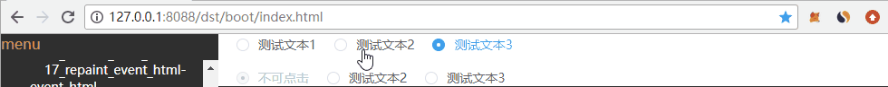14. slider组件¶
调用实例
<components-slider-slider>{value:0,min:0,max:1,precision:2,step:3,showValue:true}</components-slider-slider>
效果展示：
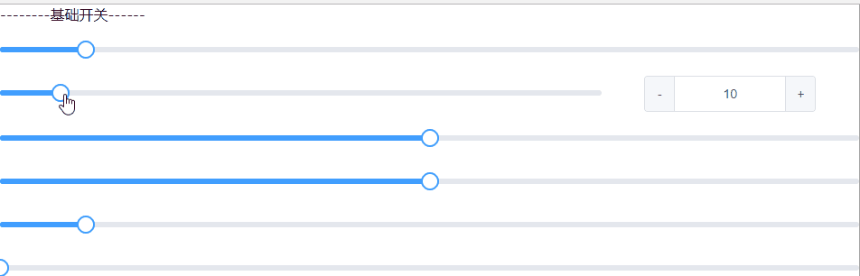参数介绍
- 初始值(value)–默认为0
- 最小值(min)–默认为0
- 最大值(max)–默认为100
- 保留几位小数(precision)–默认为0
- 滑动间隔步数(step)–默认为1
- 显示数量(showValue)–默认为false
事件
- value改变时抛出ev-slider-change事件，外部接收即可，参数如下
- 改变后的值(value)
遇见的问题
- 在代码中动态绑定事件时，不能使用window.addEventListener(‘mousemove’, this.onDragging);需要addEvent(window, ‘mousemove’, this, true)，其中addEvent是widget/scroller/dom中提供的函数
- 在代码中动态绑定事件时，不建议直接绑定对应处理函数，这样将导致this的指向异常。可通过绑定this对象，并在widget中声明handleEvent函数进行中转，从而达到调用对应处理函数的目的
- 为了实现鼠标在任意位置都能触发move与up事件，通常在触发down事件后，将对应事件动态的绑定在window上
- 滑动间隔步数与保留几位小数不建议同时使用，其表现上控制起来较难
15. steps组件¶
调用实例
<components-steps-steps>{type:"vertical",list:[ {status:"success",title:"已完成",description:"我是描述1"} ,...]}</components-steps-steps>
效果展示：
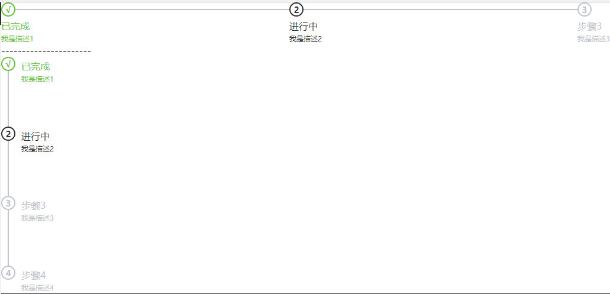参数介绍
类型(type)
- 横向显示(horizontal)
- 纵向显示(vertical)
显示数据(list)
状态(status)
- 已完成(success)
- 进行中(process)
- 等待中(wait)
标题(title)
描述(description)–可不填
该组件的目的是根据传入数据，显示不同类型不同状态下步骤信息
16. switch组件¶
调用实例
<components-switch-switch>{type:true,activeColor:"#13ce66",inactiveColor:"#ff4949"}</components-switch-switch>
效果展示：
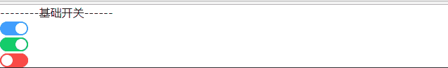参数介绍
- 当前状态(type)–默认为false
- 激活时颜色(activeColor)–默认为#409eff
- 未激活时颜色(inactiveColor)–默认为#dcdfe6
事件
在点击开关时，会向外部抛出事件(ev-switch-click)，外部接收即可，参数如下
- 以前的状态(oldType)
- 新的状态(newType)
17. table组件¶
调用实例
<components-table-table>{datas:[["2016-05-02","王小虎","上海市普陀区金沙江路 1518 弄"], ...],title:["日期","姓名","地址"],showBoder:true,maxHeight:200 } </components-table-table>
效果展示：
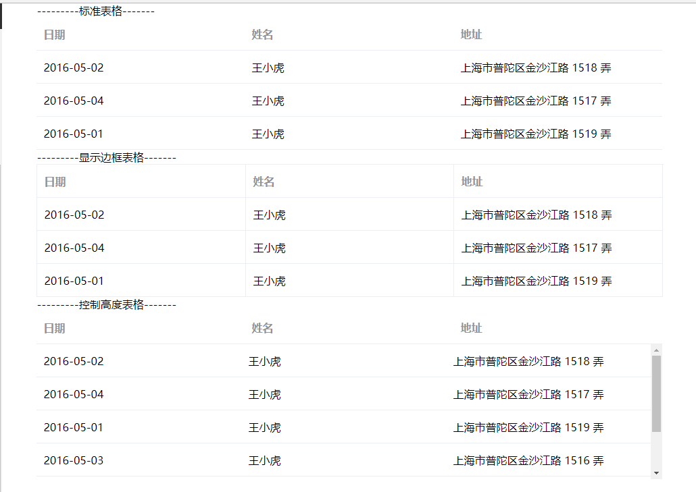参数介绍
显示数据(datas)
- 总数据为列表格式
- 每条数据内部也是列表格式
- 每条数据长度一致
标题(title)—自选
- 数据为列表格式
- 数据长度与每条显示数据长度一致
显示边框(showBoder)–默认为false
控制高度(maxHeight)–默认为不控制
该组件的目的是根据传入数据，显示不同类型的表格
18. tabs组件¶
调用实例
<components-tabs-tabs>{list:{{it1.list}},activeNum:{{it1.activeNum}},type:"card",position:"right" } </components-tabs-tabs> it1.list = ["用户管理", "配置管理", "角色管理", "定时任务补偿"]
效果展示：
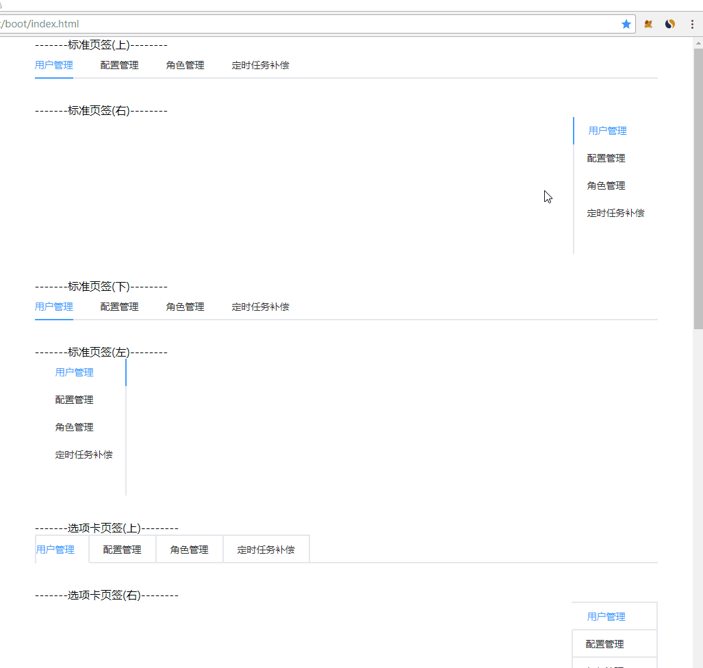参数介绍
显示数据(list)
当前激活位置(activeNum)—默认为0
显示类型(type)–默认为normal
- 标准页签(normal)
- 选项卡页签(card)
- 卡片化页签(border_card)
显示位置(position)–默认为top
- 上方(top)
- 右方(right)
- 下方(bottom)
- 左方(left)
该组件的目的是根据传入数据，显示不同类型的页签
19. time_select¶
- props
interface Props{
start:string;//开始时间 09:00
step:string;//间隔时间 00:30
end:string;//结束时间 18:00
}
- 基础用法
<components-time_select-time_select>{start:"08:30",end:"18:30",step:"01:16"}</components-time_select-time_select>
效果展示：
- 事件
- ev-input-change 在输入框值改变时触发,回调参数 value 【英文和中文抛出事件次数有差异】
- ev-input-blur 输入框失去焦点
- ev-input-focus 输入框获得焦点
- ev-input-select 点击下拉选中后触发